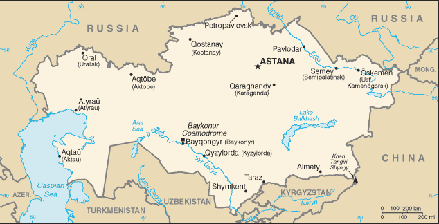
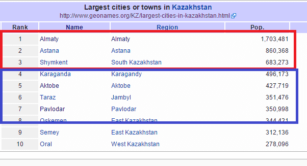
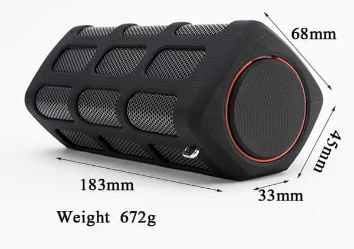

< < < Back
10 Steps To Capture A New Country’s Flag – Return Of Kings
Why sleep with an attractive girl of a specific nationality? Because it brings you an additional comprehension of the world by comparing what you truly seek in a woman. It brings variety. Something exotic, unknown, and part of a man’s travel experience. And it may lead a fulfilling long-term relationship that is becoming harder to find in the West.
An example of my method
We shall bang hotties on the beaches, we shall smash sluts on the landing grounds, we shall slay pussy in the fields and in the streets, we shall fornicate 9’s in the hills; we shall never come back with blue balls.
We will not focus on self improvement and the things that you already know about. We will also not focus on administrative requirements for you to go to X country as every case is different. I will show you some of the methods that helped me in the past, making the capture of a specific flag easier.
To illustrate my point, I will choose a hypothetical trip to Kazakhstan, for a few reasons:
- Still need my Kazakh flag. Having met a few, I find ethnic Kazakh girls attractive, elegant and accessible. There also are Russian girls for a good time.
- A Muslim country on the Silk Road, quite exotic. A chunk of the former Soviet Union with desert and steppes
- Unknown and unusual food and language
- Fairly close to Europe and relatively tourist-free so I would have a decent foreigner value
- Never been there so far
The important steps
1. Choose a city
- Choose the city considering the foreigner value that you will have
- The smaller the city, the fewer the girls and the occasions to bang with little time or without a social circle. Try to find something between 300,000 inhabitants and above.
- Find which cities have the most universities. Once you find it, stick to it to build momentum.


Cities in red would be ideal for less than a week. Cities in blue would be ideal for 2 weeks +
Less than a week, it will be Almaty and its 30 universities. If time allows it, I would choose Karaganda (three universities and I can piss off to Astana if it turns out to be a hole).
2. Sharpen your language skills
- A month prior, practice 30 minutes a day the target language
- Find apps on your phone with flash cards. Watch the news in the target language. Find local groups on social media and practice live with native speakers
Everyone speaks Russian in Kazakhstan. With my conversational level. I’d dust off the classics by applying the points above, plus calling my Russian friends and practicing on Skype. I would learn greetings in Kazakh such as “Come here” or “Let’s go and dance.”
3. Study the culture
- Read about history, family, traditions and the weight of religion in the country
- Check what kind of men local girls look for. Stay the same but tweak you personality in accordance.
- Know your target. Stereotypes exist for a reason. Try to focus your reasoning around a few adjectives that describe the local girls.

Moderate Islam because of Communist past. More conservative than Russian girls. Double shield against the influence of the West, but girls drink and still dress sexy.
4. Logistics

- Book a room or apartment of your own (Airbnb and Booking.com seem to have the best offers)
- When a room is the only alternative, check if you can bring a girl over. Ask the security or landlord “A friend of mine will come and chill this afternoon before we go for dinner, do you mind?”
- It needs to be less than a 20 minutes walk from the bar or club
- Scout on your first day a date spot with alcohol and no food near your place
- Ask the locals their recommendations for clubs/bars

The blue circle is the 20 minutes walking distance, the red circle is the ideal position where I should stay in Karaganda
5. Pay attention to timing
- There is an unwritten rule that two weeks is the ideal amount of time to get a flag at least once.
- Try to be rested. Skip a night of game if needed. Use the strategical afternoon nap
- Find the season where the city will have the most girls. Winter universally less active. Summer months, girls are away working or on holiday.

Following the Russian model, the ideal months would be : April to Mid-June / Late August to beginning of October. It is a Muslim country with some Orthodox Christians. Would avoid bank holidays and Ramadan.
6. Arrive focused and ready

- Pipeline a few weeks before your arrival on dating websites and applications
- You are on a mission. Do not achieve orgasm for a few days. Build up horniness and motivation
7. Set up your lair

- Alcoholic drinks and mixers stored at your place
- Needs to be clean
- Keep your valuables hidden if the local girls have the reputation of being poor and stealing stuff from foreigners
- Have appropriate music to set the mood

Vodka, lemonade and a lemon in the fridge. When I don’t have a sound system where I stay, I usually use one of these with my phone
8. Get dressed
- Check the weather forecast and the seasonal pattern
- Dress down if you have time ahead of you or if your foreigner value compensates your casual clothes
- Good, comfortable shoes are important
Kazakh men, in true FSU fashion, rarely dress well. With smart casual, you would stand out.

My day game uniform (minus the moped). Comfy and better dressed than 90% of the locals
9. Game like a machine
- Approach all the time. Groups, hair dresser, cops. The girl is pretty, you pounce. Only stop for sport and work
- Listen to your gut. Weed out flaky girls. Eject and find new prospects
- Venues to choose for night game: student places, lounge bars that are not sponsor spots. Avoid snobby clubs with crazy entrance cover, overpriced drinks and girls that have no interest in banging a foreigner if he is not in their social circle
- Schedule if you are free: 1st date 15.00, 2nd date 18.00, 3rd date 21.00 + night game. Meet, drink, build comfort, escalate and bring her to your place. If you don’t succeed, rinse and repeat.
In Kazakhstan, headscarves are rare and I should not have problems approaching during the day (when it is not Ramadan). I would try to do 10 daily approaches (sometimes a lot more) and 10 at night until success
10. Mind your health
- Bring Condoms. Loads.
- Vitamins
- Eat well. Don’t change your habits because you travel
- Careful with the street food and tap water. Getting sick is the last thing you need
- Always have a 5 liter bottle of still water at your place
- Go for a run. It will allow you to get a sense of the place.
Un dernier mot
The flag is not the main purpose of my travels but I have physical needs and I am always thirsty for adventure, and sometimes love. One should not travel to a place that does not seem interesting or where the culture repulses him in order to just get a flag.
Read More: 8 Essential Steps For When You Get Dumped